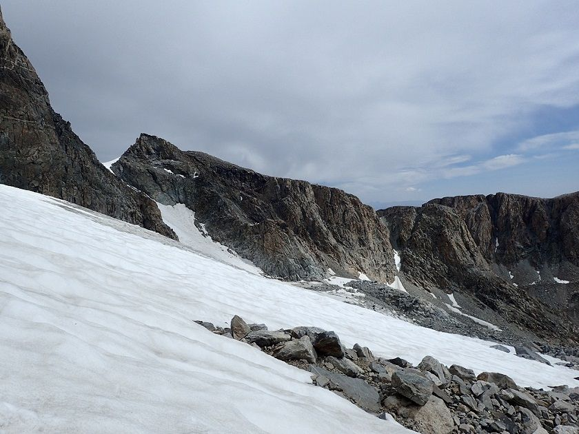

Gannet Peak - Day 5 - The Ascent
I started out from camp twice, the first time I woke up at 1:00 am, loaded my stuff in the dark and headed into the boulder field. It was dark and before I got very far it started sleeting and there were no stars to be seen.
I decided the extra risk of slipping wasn't worth it, so I went back through the boulder field to camp and got back into my sleeping bag. At approximately 4:00 am, I was awoken by a party of three starting out and the older couple getting ready.
I looked up, the stars were out so I decided that it was a go. I hurriedly reorganized my stuff and headed back up through the boulder field. I reached the snow just as it was getting light and put my mountaineering boots and crampons on. There was some hard ice and more snow, before another section of rock to reach the Gooseneck Glacier.
The traverse over to the bergschrund was pretty level and there was even a path worn into the snow from the previous climbers.
However, the actual bergschrund crossing was kinda hairy, because there were two major cracks, mandating that one go up, then traverse to the left above the crack, go up again, then traverse right back over the top of the first crack.
Once I was at the top of the chute, the snow ran out and I stashed my crampons. From there it was a pretty straight forward climb up the ridge to the summit, with no major hurdles and plenty of wide ledges to use.
Once at the summit I found the summit register and stopped to take photos. I could see all of the ways to the Tetons, while to the south the mountain peaks stretched into the far distance.
I started the descent, passing the party of three who had awoken me in the morning and was able to get enough of a cell signal to text my parents.
Going down the ridge was pretty easy, getting down to the Gooseneck chute was not. Once at the chute, I put my crampons back on, and backed down the bergschrund, firmly planting my ice ax with both hands before moving my feet.
The snow was a lot more melted than when I came up, and while going down the bergschrund I crossed paths with the two gentlemen from the day before, as well as the older couple down below while traversing across the glacier.

Once back on the glacier it was just a slow process of going down the rocks and boulders and scree. I finally got back to my camp and took a nap to rest. When I go up, I decided that I wanted to be below timberline in case it rained, so I packed up my gear and headed down the trail. Just before the timberline, I got caught in a small hailstorm.
I made it all the way back until the major stream crossing, and the snow melt had raised the water level to an uncrossable degree, so I set up camp and waited till the morning.